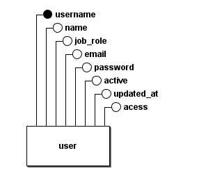
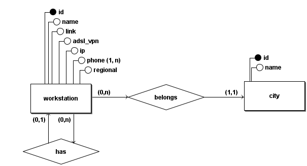
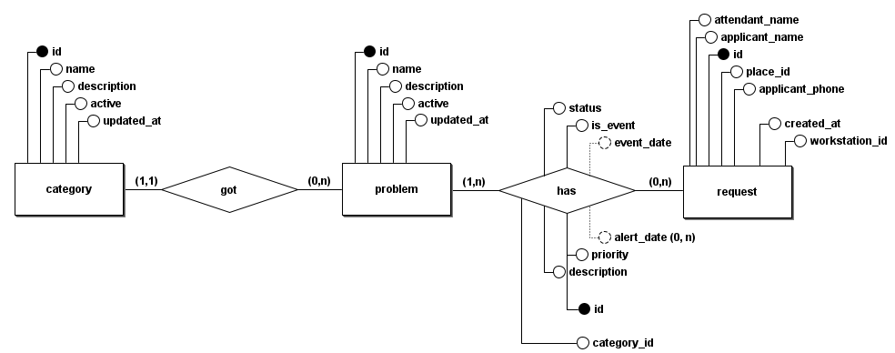

Documento de Arquitetura
Histórico da Revisão
| Data | Versão | Descrição | Autor |
|---|---|---|---|
| 18/09/2022 | 1.0 | Criação do documento | Roberto Martins da Nóbrega |
Introdução
Finalidade
Este documento de arquitetura de software fornece uma visão geral de arquitetura abrangente do sistema de software. Ele pretende capturar e transmitir as decisões arquiteturas significativas que foram tomadas em relação ao sistema.
Escopo
Este documento tem como finalidade apresentar a arquitetura do projeto Schedula, que consiste em um sistema de gerenciamento de chamados para a polícia civil do estado do Goiás. O sistema é composto por 3 microserviços de backend e 1 frontend que os utiliza.
Representação da Arquitetura
Tecnologias
O projeto utiliza as seguintes tecnologias:
Frontend:
- Nextjs: Framework para desenvolvimento de aplicações web com React.
A escolha do Nextjs se deu pela facilidade de desenvolvimento e pelas rotas baseadas em sistemas de arquivos, que facilitam a manutenção do projeto.
Backend:
- Fastapi: Framework para desenvolvimento de aplicações web com Python.
A escolha do Fastapi se deu devido ao fato dos nossos desenvolvedores terem mais experiência com Python do que com outras linguagens exemplificado pela tabela de conhecimento e por sua excelente documentação e facilidade de aprendizado e desenvolvimento.
Banco de Dados:
- PostgreSQL: Banco de dados relacional.
A escolha do PostgreSQL se deu pela facilidade de desenvolvimento e pela sua alta escalabilidade.
Requisitos e Restrições Arquiteturais
Requisitos
| Escalabilidade | Segurança | Confiabilidade | Desempenho | Deploy |
|---|---|---|---|---|
| A aplicação deve ser escalável | A aplicação deve garantir a segurança dos dados sensíveis do usuário | A aplicação deve garantir a confiabilidade dos dados | A aplicação deve garantir um bom desempenho | A aplicação deve possuir deploy automatizado |
Restrições
| Conectividade | Plataforma | Equipe | Prazo | Tecnologias |
|---|---|---|---|---|
| É necessário conecção com a internet para sua utilização | A aplicação será apenas para a plataforma web | A equipe de desenvolvimento é composta por 12 pessoas | O escopo proposto para o MVP deverá ser concluido até o final da disciplina | A aplicação será desenvolvida utilizando as tecnologias listadas na seção de tecnologias |
Diagrama de Pacotes
Os diagramas de pacote são projetados para fornecer uma estrutura hierárquica das pastas que compõem um projeto. Eles são úteis para mostrar a estrutura de um projeto e como os pacotes estão relacionados entre si.
Backend:

Frontend:

Visão de Dados
A visão de dados mostra como a camada de persistência do projeto é construída, mapeando objetos e modelos de dados.
Diagrama Entidade-Relacionamento (DE-R) - Gestor de Usuários

Diagrama Lógico de Dados (DLD) - Gestor de Usuários

Diagrama Entidade-Relacionamento (DE-R) - Gerenciador de Localidades

Diagrama Lógico de Dados (DLD) - Gerenciador de Localidades

Diagrama Entidade-Relacionamento (DE-R) - Detalhador de Chamados

Diagrama Lógico de Dados (DLD) - Detalhador de Chamados